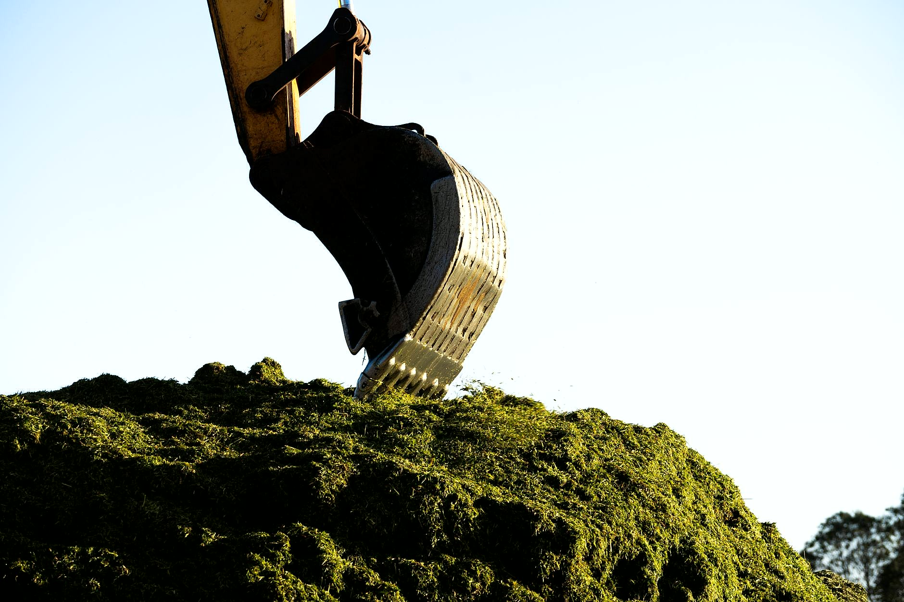
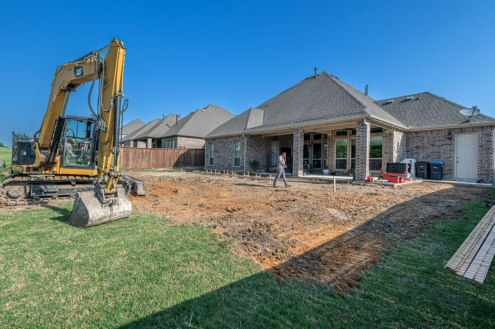

Co robimy minikoparką
Pracujemy dla osób prywatnych, firm i instytucji. Mała maszyna wejdzie do ogrodu za domem, na podwórko w kamienicy i na ciasną działkę w zabudowie, gdzie koparko-ładowarka by się nie zmieściła. Cenę podajemy po obejrzeniu terenu.

Wykopy pod fundamenty
Ławy fundamentowe pod dom, garaż, altanę albo ogrodzenie. Ziemię odkładamy w miejscu, które wskażesz, żeby wróciła potem do zasypki.

Przyłącza i rowy
Wąskie wykopy pod wodociąg, kanalizację, prąd i gaz, od budynku do granicy działki. Po ułożeniu rur zasypujemy rów i wyrównujemy teren.

Drenaże i odwodnienia
Rowy pod drenaż wokół domu, studnie chłonne i odprowadzenie deszczówki, żeby woda nie stała pod ścianą ani na trawniku.

Niwelacja i prace w ogrodzie
Wyrównanie działki pod trawnik, rozplantowanie ziemi po budowie, profilowanie skarpy i spadku od domu, doły pod drzewa i oczko wodne.

Korytowanie pod kostkę
Zdejmujemy ziemię na głębokość pod podbudowę podjazdu, ścieżki albo tarasu, żeby brukarz dostał równe koryto.

Prace w ciasnych miejscach
Podwórka, przejścia między budynkami, działki za domem i teren przy istniejącym ogrodzeniu. Tam, gdzie zostaje tylko łopata, wjeżdża minikoparka.
Która z usług Cię interesuje?
Napisz, co chcesz zrobić - odpowiemy z propozycją i wyceną.